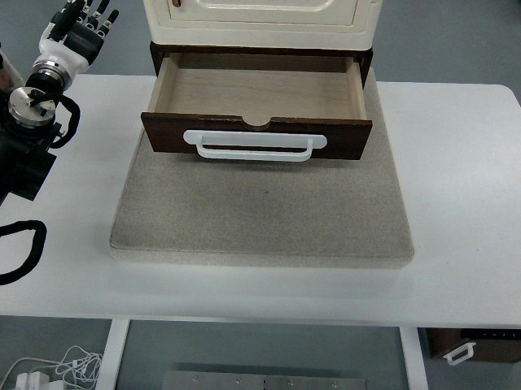

RoboMIND · tienkung_gello_1rgb__close_the_drawer_under_the_combination_cabinet/1211_104950
Close the drawer under the combination cabinet

Annotation
From the dedicated visual review of this video (humanoid_action_v1). Plain text · JSON
Observed outcome
- Status
visually_completed
- Description
The drawer, partly open at frame 0, is pushed back until its dark front panel sits flush under the cabinet body with no interior visible (edge settles by about frame 400). The hand rests on the closed drawer, lifts and leaves the view by about frame 620, and the arm reappears in its upper-left rest pose with fingers upright from about frame 708; the drawer remains closed to frame 758.
Hand roles
- Active visible arm
Acting arm (probable robot-left) lowers a flat, palm-down hand with straight fingers onto the drawer's white handle/top edge of the drawer front and pushes the drawer inward (toward image top, into the cabinet) until it is closed, keeps resting on it, then lifts away upward out of the frame.
- Other arm
Not identified as visible beyond the shared black arm chain at lower left; its telemetry stays essentially constant, and no support, stabilizing, or transfer contact is observed.
Coordination
One arm acts alone. No bimanual coordination, hand-to-hand transfer, or person interaction. No grasp: the hand pushes with extended fingers and does not close around the handle.
Robot-side evidence
- Visible description
One arm with a white-shelled dexterous hand is the only moving manipulator. It rests at the upper-left of the image (fingers up) at frame 0, leaves the view, re-enters from the upper left, and returns to the same rest pose at the end. It approaches with the hand extended toward image right, back-of-hand shell facing the camera (palm down, judged from the white cover), thumb on the camera-side (image-bottom) edge. A black cable loop and chain links at the lower left of the image move with the same arm. The robot torso is outside the view.
- Telemetry support
HDF5 puppet/master joint_position (16 dims): columns 0-6 move by up to about 1.4 rad over the episode and return near their start values; column 7 (hand/gripper scalar) stays about 1.0; columns 8-14 move less than 0.02 rad and column 15 stays constant. The first 8-dim block therefore corresponds to the acting arm. Column ordering (left-first vs right-first) is not documented in the source.
- Robot relative side
Probably the robot's left arm (overhead view with the robot base at image left facing the cabinet, active arm on the image-top side, thumb toward the image-bottom/medial side for a palm-down hand), but this is not established with certainty.
- Visual certainty
Low to moderate. The robot body is not visible, so the robot's left/right is inferred only from camera geometry and hand layout and could be wrong if the camera is mirrored or the back/palm identification is mistaken. The usable prompt therefore describes the arm by its visible entry from the upper left of the image rather than naming an anatomical side.
Chronology
| Frames | Observation |
|---|---|
| 0–60 | Rest pose: hand with fingers pointing up at the upper-left of the image and a black cable loop at the lower left. Drawer partly open, handle facing the camera. Nothing moves. |
| 61–100 | Arm begins moving (telemetry changes from about frame 60-75); hand and loop leave the view toward the upper left. |
| 101–166 | No manipulator visible; scene unchanged, drawer still partly open. |
| 167–205 | Hand re-enters from the upper left, extended toward image right with thumb pointing toward the camera side, and moves over the drawer interior. |
| 206–310 | Hand lowers over the white handle; extended fingers lie across the handle and top edge of the drawer front while the thumb hangs toward the viewer. The drawer front stays at its initial position (front bottom edge at row about 196 at the right side). |
| 311–400 | Drawer front moves toward image top and into the cabinet under the resting hand (front edge row 196 to about 159 by frame 400); the interior disappears. Which hand surface actually transmits the push (fingers vs palm edge) is not resolved. |
| 401–590 | Drawer closed, front flush under the cabinet body. Hand stays on or over the handle with little visible change. |
| 591–620 | Hand lifts off the handle and moves up and out of the top of the frame. |
| 621–707 | No manipulator visible; drawer closed. |
| 708–758 | Arm re-enters at the left edge and settles in the original upper-left rest pose with fingers pointing up; drawer remains closed through final frame 758. |
Clip selection
Single continuous task with ordinary phases (arm leaves view, re-enters, contacts the drawer handle, pushes the drawer closed, dwells, withdraws, returns to rest). No independent repeated subtasks, so the complete clip is retained and no shortened branch exists.
Differences from the publisher annotation
- None: the publisher instruction 'Close the drawer under the combination cabinet' matches the visual content. The source gives no side or manipulation detail, which was authored from the video.
Uncertainties
- Robot-relative left/right cannot be confirmed because the robot body is out of view; telemetry block order is undocumented.
- Back-of-hand versus palm identification relies on the white cover and may be wrong.
- The exact contact surface (fingertips, finger pads or edge of the palm) and whether the hand ever pushes the handle vs the front panel is occluded or ambiguous at 640x480.
- Frame boundaries are approximate, derived from every-second-frame sheets plus native-resolution spot checks and a right-edge row measurement of the drawer front.
- FPS is not recorded, so durations are not stated.
- Palm versus back-of-hand orientation and the exact finger/palm contact surface are not resolvable at 640x480, so the prompt omits palm and thumb orientation.
Complete review record action_review.json
{
"prompt_protocol": "humanoid_action_v1",
"prompt_protocol_note": "humanoid_action_v1 is applied by analogy to a Tien Kung humanoid with dexterous hands (RoboMIND), which is neither Humanoid Everyday nor NVIDIA GR1.",
"prompt_provenance": "visually_authored_from_video_and_initial_frame",
"dataset": "x-humanoid-robomind/RoboMIND",
"task": "tienkung_gello_1rgb__close_the_drawer_under_the_combination_cabinet",
"episode_id": "1211_104950",
"source_video": "../../original/data/trajectory.hdf5",
"generation_camera": "camera_top",
"source_frame_count": 759,
"source_resolution": [
640,
480
],
"source_fps": null,
"source_fps_note": "FPS is not recorded in the HDF5 source; 30 FPS is only a nominal playback rate of the decoded preview, so no real-time durations are claimed.",
"selected_source_frame_start": 0,
"selected_source_frame_end_exclusive": 759,
"selected_frame_count": 759,
"selection_reason": "Single continuous task with ordinary phases (arm leaves view, re-enters, contacts the drawer handle, pushes the drawer closed, dwells, withdraws, returns to rest). No independent repeated subtasks, so the complete clip is retained and no shortened branch exists.",
"usable_prompt": "The humanoid's arm enters from the upper left of the image and lowers its dexterous hand, fingers extended, onto the white handle of the partly open drawer. The hand pushes the drawer front inward until the drawer is fully closed, then lifts away and out of view. Keep the camera fixed; preserve robot geometry, physically valid joint motion, and normal gripper opening and closing.",
"full_sequence_prompt": "The humanoid's arm enters from the upper left of the image and lowers its dexterous hand, fingers extended, onto the white handle of the partly open drawer. The hand pushes the drawer front inward until the drawer is fully closed, then lifts away and out of view. Keep the camera fixed; preserve robot geometry, physically valid joint motion, and normal gripper opening and closing.",
"selected_action_outcome": {
"status": "visually_completed",
"description": "The drawer, partly open at frame 0, is pushed back until its dark front panel sits flush under the cabinet body with no interior visible (edge settles by about frame 400). The hand rests on the closed drawer, lifts and leaves the view by about frame 620, and the arm reappears in its upper-left rest pose with fingers upright from about frame 708; the drawer remains closed to frame 758."
},
"source_overall_outcome": {
"status": "visually_completed",
"source_quality_label": "success_episodes/train (archive member path)",
"description": "Matches the publisher instruction: the drawer ends fully closed."
},
"anatomical_side_evidence": {
"visible_description": "One arm with a white-shelled dexterous hand is the only moving manipulator. It rests at the upper-left of the image (fingers up) at frame 0, leaves the view, re-enters from the upper left, and returns to the same rest pose at the end. It approaches with the hand extended toward image right, back-of-hand shell facing the camera (palm down, judged from the white cover), thumb on the camera-side (image-bottom) edge. A black cable loop and chain links at the lower left of the image move with the same arm. The robot torso is outside the view.",
"telemetry_support": "HDF5 puppet/master joint_position (16 dims): columns 0-6 move by up to about 1.4 rad over the episode and return near their start values; column 7 (hand/gripper scalar) stays about 1.0; columns 8-14 move less than 0.02 rad and column 15 stays constant. The first 8-dim block therefore corresponds to the acting arm. Column ordering (left-first vs right-first) is not documented in the source.",
"robot_relative_side": "Probably the robot's left arm (overhead view with the robot base at image left facing the cabinet, active arm on the image-top side, thumb toward the image-bottom/medial side for a palm-down hand), but this is not established with certainty.",
"visual_certainty": "Low to moderate. The robot body is not visible, so the robot's left/right is inferred only from camera geometry and hand layout and could be wrong if the camera is mirrored or the back/palm identification is mistaken. The usable prompt therefore describes the arm by its visible entry from the upper left of the image rather than naming an anatomical side."
},
"arm_roles": {
"active_visible_arm": "Acting arm (probable robot-left) lowers a flat, palm-down hand with straight fingers onto the drawer's white handle/top edge of the drawer front and pushes the drawer inward (toward image top, into the cabinet) until it is closed, keeps resting on it, then lifts away upward out of the frame.",
"other_arm": "Not identified as visible beyond the shared black arm chain at lower left; its telemetry stays essentially constant, and no support, stabilizing, or transfer contact is observed."
},
"coordination": "One arm acts alone. No bimanual coordination, hand-to-hand transfer, or person interaction. No grasp: the hand pushes with extended fingers and does not close around the handle.",
"chronology": [
{
"source_frames_inclusive": [
0,
60
],
"observation": "Rest pose: hand with fingers pointing up at the upper-left of the image and a black cable loop at the lower left. Drawer partly open, handle facing the camera. Nothing moves."
},
{
"source_frames_inclusive": [
61,
100
],
"observation": "Arm begins moving (telemetry changes from about frame 60-75); hand and loop leave the view toward the upper left."
},
{
"source_frames_inclusive": [
101,
166
],
"observation": "No manipulator visible; scene unchanged, drawer still partly open."
},
{
"source_frames_inclusive": [
167,
205
],
"observation": "Hand re-enters from the upper left, extended toward image right with thumb pointing toward the camera side, and moves over the drawer interior."
},
{
"source_frames_inclusive": [
206,
310
],
"observation": "Hand lowers over the white handle; extended fingers lie across the handle and top edge of the drawer front while the thumb hangs toward the viewer. The drawer front stays at its initial position (front bottom edge at row about 196 at the right side)."
},
{
"source_frames_inclusive": [
311,
400
],
"observation": "Drawer front moves toward image top and into the cabinet under the resting hand (front edge row 196 to about 159 by frame 400); the interior disappears. Which hand surface actually transmits the push (fingers vs palm edge) is not resolved."
},
{
"source_frames_inclusive": [
401,
590
],
"observation": "Drawer closed, front flush under the cabinet body. Hand stays on or over the handle with little visible change."
},
{
"source_frames_inclusive": [
591,
620
],
"observation": "Hand lifts off the handle and moves up and out of the top of the frame."
},
{
"source_frames_inclusive": [
621,
707
],
"observation": "No manipulator visible; drawer closed."
},
{
"source_frames_inclusive": [
708,
758
],
"observation": "Arm re-enters at the left edge and settles in the original upper-left rest pose with fingers pointing up; drawer remains closed through final frame 758."
}
],
"uncertainties": [
"Robot-relative left/right cannot be confirmed because the robot body is out of view; telemetry block order is undocumented.",
"Back-of-hand versus palm identification relies on the white cover and may be wrong.",
"The exact contact surface (fingertips, finger pads or edge of the palm) and whether the hand ever pushes the handle vs the front panel is occluded or ambiguous at 640x480.",
"Frame boundaries are approximate, derived from every-second-frame sheets plus native-resolution spot checks and a right-edge row measurement of the drawer front.",
"FPS is not recorded, so durations are not stated.",
"Palm versus back-of-hand orientation and the exact finger/palm contact surface are not resolvable at 640x480, so the prompt omits palm and thumb orientation."
],
"source_annotation_discrepancies": [
"None: the publisher instruction 'Close the drawer under the combination cabinet' matches the visual content. The source gives no side or manipulation detail, which was authored from the video."
],
"inspection_coverage": {
"entire_sequence_reviewed": true,
"sampled_decoded_frame_indices": [
0,
2,
4,
6,
8,
10,
12,
14,
16,
18,
20,
22,
24,
26,
28,
30,
32,
34,
36,
38,
40,
42,
44,
46,
48,
50,
52,
54,
56,
58,
60,
62,
64,
66,
68,
70,
72,
74,
76,
78,
80,
82,
84,
86,
88,
90,
92,
94,
96,
98,
100,
102,
104,
106,
108,
110,
112,
114,
116,
118,
120,
122,
124,
126,
128,
130,
132,
134,
136,
138,
140,
142,
144,
146,
148,
150,
152,
154,
156,
158,
160,
162,
164,
166,
168,
170,
172,
174,
176,
178,
180,
182,
184,
186,
188,
190,
192,
194,
196,
198,
200,
202,
204,
206,
208,
210,
212,
214,
216,
218,
220,
222,
224,
226,
228,
230,
232,
234,
236,
238,
240,
242,
244,
246,
248,
250,
252,
254,
256,
258,
260,
262,
264,
266,
268,
270,
272,
274,
276,
278,
280,
282,
284,
286,
288,
290,
292,
294,
296,
298,
300,
302,
304,
306,
308,
310,
312,
314,
316,
318,
320,
322,
324,
326,
328,
330,
332,
334,
336,
338,
340,
342,
344,
346,
348,
350,
352,
354,
356,
358,
360,
362,
364,
366,
368,
370,
372,
374,
376,
378,
380,
382,
384,
386,
388,
390,
392,
394,
396,
398,
400,
402,
404,
406,
408,
410,
412,
414,
416,
418,
420,
422,
424,
426,
428,
430,
432,
434,
436,
438,
440,
442,
444,
446,
448,
450,
452,
454,
456,
458,
460,
462,
464,
466,
468,
470,
472,
474,
476,
478,
480,
482,
484,
486,
488,
490,
492,
494,
496,
498,
500,
502,
504,
506,
508,
510,
512,
514,
516,
518,
520,
522,
524,
526,
528,
530,
532,
534,
536,
538,
540,
542,
544,
546,
548,
550,
552,
554,
556,
558,
560,
562,
564,
566,
568,
570,
572,
574,
576,
578,
580,
582,
584,
586,
588,
590,
592,
594,
596,
598,
600,
602,
604,
606,
608,
610,
612,
614,
616,
618,
620,
622,
624,
626,
628,
630,
632,
634,
636,
638,
640,
642,
644,
646,
648,
650,
652,
654,
656,
658,
660,
662,
664,
666,
668,
670,
672,
674,
676,
678,
680,
682,
684,
686,
688,
690,
692,
694,
696,
698,
700,
702,
704,
706,
708,
710,
712,
714,
716,
718,
720,
722,
724,
726,
728,
730,
732,
734,
736,
738,
740,
742,
744,
746,
748,
750,
752,
754,
756,
758
],
"sampling_method": "Every second decoded frame tiled 5x4 into 19 temporary contact sheets covering the whole episode; native-resolution spot checks and crops of the transition frames; a numeric row-position trace of the drawer front's bottom edge every 10 frames; HDF5 joint telemetry used only as supporting evidence.",
"native_resolution_frame_indices": [
0,
50,
70,
100,
150,
180,
200,
206,
226,
230,
240,
250,
260,
280,
300,
312,
320,
330,
350,
360,
370,
400,
440,
480,
520,
560,
580,
600,
610,
620,
640,
660,
680,
700,
730,
740,
758
],
"conditioning_png_inspected_after_sequence": true,
"conditioning_png": "../first_frame.png",
"temporary_evidence_location": "/tmp/rm_review_tienkung (removed; not a dataset artifact)",
"ancillary_camera_videos_used": false
},
"generation_reference_validation": {
"source_frame_start": 0,
"source_frame_end_exclusive": 759,
"frame_count": 759,
"lossless_source_frame_correspondence_passed": true,
"original_source_hdf5_retained_unchanged": true
},
"channel_order_note": "Channel-order correction (2026-10-15): RoboMIND stores Tien Kung JPEGs with red and blue swapped relative to a standard decoder; this review was made on uncorrected frames, so colour terms in its observations are swapped (teal/cyan reads as yellow or yellow-green, blue as orange/brown, brown/pink as blue). Actions, timing and outcomes are unaffected. All decoded derivatives are now corrected."
}